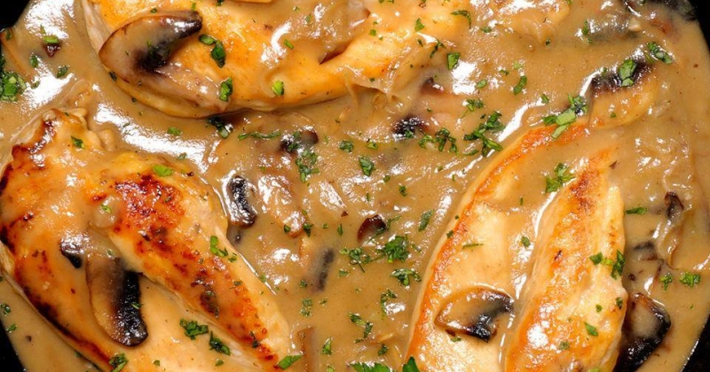
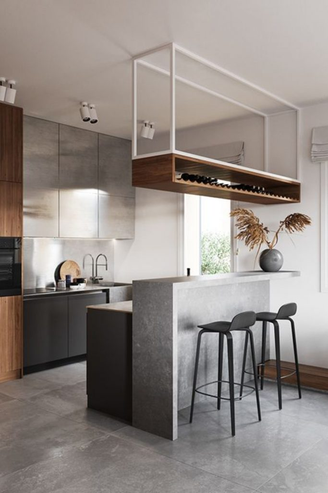

RETETE RAPIDE - CAIETUL CU RETETE
2021.03.24 15:44

ULTIMELE RETETE
CAIETUL CU RETETE
Un blog cu retete culinare, retete simple si la indemana oricui, retete rapide, retete usoare, torturi si prajituri.
Acasa Retete Aperitive Retete de mancaruri Fripturi Peste Salate Pizza si paste Bauturi Dulciuri diverse Chec si fursecuri Torturi Prajituri Paine si patiserie Dulceturi si muraturi Inghetata Retete rapide Retete post Retete Craciun Retete traditionale specifice sarbatorilor de iarna Retete de cozonac si chec Prajituri festive Torturi festive Dulciuri festive Aperitive festive Fripturi festive Petreceri pentru copii Retetele Copilariei Retete Pasti Aboneaza-te ContactPublicitate!
8 feb. 2013
RETETE RAPIDE
Postat de Postolache Violeta on februarie 08, 2013 in retete ieftine retete in 30 minute retete rapide retete simple retete usoare | Comments : 32
Traim in secolul vitezei, timpul trece pe langa noi, iar noi cu greu reusim sa ii facem fata. Asa ca am pregatit pentru voi o selectie de retete rapide, perfecte atunci cand sunteti in criza de timp. Sunt retete rapide, retete usoare, retete simple, retete ieftine cu ingrediente simple la indemana tuturor sau retete fine cu ingrediente deosebite.
Sper sa va fie de folos, spor la gatit!
Pentru a ajunge in pagina retetei dati click pe denumirea acesteia!
Conopida in stil chinezesc cu garnitura de orez
Pui Kiev
Gordon Bleu din piept de pui
Spaghete carbonara
Spaghete carbonara cu smantana
Sprot prajit
Paste Quatro Formaggi
Cascaval pane
Pui Valdostana
Tarte rapide cu naut
Ciuperci cu quinoa si spanac
Tarta cu vinete
Falafel, chiftele de naut
Morcovi noi la cuptor
Fajitas de pui
Penne a la Norma
Piept de pui cu piersici si cascaval
Salata cu rucola, kaki si ridichi
Cartofi noi la cuptor cu sos de smantana si marar
Cartofi noi la ceaun cu marar si usturoi
Cotlet de porc cu sparanghel sote
Somon cu broccoli
Muschi de vita cu sos de ciuperci
Briose aperitiv
Salata de ciuperci cu smantana, maioneza si usturoi
Frigarui de somon
Ciuperci umplute cu gorgonzolla
Omleta pizza
Foietaj cu smochine, gorgonzola si camembert
Creveti in stil chinezesc
Midii cu usturoi si patrunjel
Scoici Saint Jaques pe grill cu piure de mazare
Scoici Saint Jaques sotate in unt
Frittata cu paste si legume
Taitei cu nuci si branza cu mucegai
Sos de avocado
Salata de paste cu smochine si mozzarella
Salata de sfecla rosie cu portocale
Andive cu ricotta migdale si stafide
Piept de pui in sos curry
Broccoli sote cu lamaie si usturoi
Taitei picanti cu ton si sos cremos de avocado
Budinca de capsuni cu seminte de chia
Penne cu ciuperci si sos alb
Somn la tigaie
Pulpe de pui cu cartofi la cuptor
Pasta de avocado
Salata cu vita, rucola si cus-cus
Pizza rapida
Salata de spanac cu capsuni si migdale
Spaghete cu sos de ciuperci
Aripioare lipicioase
Pizza ultra rapida cu prosciutto si mozzarella
Dovlecei pane cu sos de usturoi
Aperitiv rapid cu ardei si ricotta
Salata asiatica cu taitei
File de somon cu piper rosu si lamaie
Guacamole
Melcisori pizza
Salata cu fructe de mare si avocado
Paella cu fructe de mare
Frigarui de pui cu rosii cherry
Noodles cu pui si legume
Frigarui din carne de rata
Foietaj cu spanac
Snitele din piept de pui
Copanele de pui cu stafide in sos de bere neagra
Ciuperci cu smantana
Supa rece de castraveti cu iaurt
Somon pe grill cu sos de iaurt
Aperitiv cu somon afumat
Salata de rucola cu pui, portocala si rodie
Salata cu piept de pui si rosii cherry
Salata de ton cu fasole rosie
Salata Capresse
Salata de spanac cu g rapefruit si feta
Rulouri de pui cu ciuperci invelite in bacon
Rata cu ananas
Snitele turnate
Ochiuri in cuib
Omleta cu praz si ciuperci
Spirale cu crema de branza si praz
Rulouri de pui cu ciuperci invelite in bacon
Tochitura de pui
Tochitura mol doveneasca
Porc dulce acrisor
Muschi de porc cu ananas si garnitura de orez curry
Cotlet de rechin in vin
Somon la cuptor cu sos de ananas
Farfale cu ton
Salata de oua cu cartofi si hamsii
Salata calda de pan gasius
File de somon pane
File de pan gasius in sos de portocale
Salata Cezar
Semiluna cu nuca
Bilute cu visine
Biscuiti cu cocos
Briose cu mure
Rulada cu gem
Prajitura puturosului
Rafaello
Prajitura rapida cu zmeura
Fur securi c u stafide
Panna Cotta
Panna cotta cu ness
Distribuie daca iti place:
RETETE ASEMANATOARE
32 de comentarii :
ophelia1983 08 februarie, 2013 17:27numai bunatai! chiar eram in cautare de niste retete rapide!
Răspundeți Ștergere Răspunsuri Răspundeți roxanaaa 05 iunie, 2013 17:40foarte bune si interesante!! si foarte usor de realizat!! multumim, pe mine m a ajuta foarte mult acest site..in momentele de lipsa de inspiratie!!! thx
Răspundeți Ștergere Răspunsuri Postolache Violeta 18 iunie, 2013 14:11multumesc pentru aprecieri, ma bucur ca pot fi de folos!
Ștergere Răspunsuri Răspundeți Răspundeți Anonim 18 iunie, 2013 12:05Prezentare de 5 stele.Bravo .
Răspundeți Ștergere Răspunsuri Postolache Violeta 18 iunie, 2013 14:07multumesc frumos! :)
Ștergere Răspunsuri Răspundeți Răspundeți Anonim 21 iunie, 2013 17:06iti multumim ca ne dai idei de noi retete !multumim!
Răspundeți Ștergere Răspunsuri Răspundeți Anonim 25 iunie, 2013 17:10Foarte tare blogul asta :) Felicitari !
Răspundeți Ștergere Răspunsuri Răspundeți Anonim 08 iulie, 2013 23:06 cel mai bun blog, felicitari...
E FOARTE TARE FRATE FELICITARI
Răspundeți Ștergere Răspunsuri Postolache Violeta 18 noiembrie, 2013 11:28multumesc! :)
Ștergere Răspunsuri Răspundeți Răspundeți Anonim 04 decembrie, 2013 09:05Superbe toate retetele nu te poti decide sunt bune toate felicitari.
Răspundeți Ștergere Răspunsuri Răspundeți Unknown 17 decembrie, 2013 15:59bun foarte bun dar cine le face...
Răspundeți Ștergere Răspunsuri Răspundeți Unknown 29 ianuarie, 2014 19:26Vaaaaai de mineeee ce de bunataturi! Eu una multumesc din suflet pentru minunata sursa de inspiratie! :)
Răspundeți Ștergere Răspunsuri Răspundeți Anonim 17 februarie, 2014 17:19Superbe toate!
Răspundeți Ștergere Răspunsuri Răspundeți Anonim 19 februarie, 2014 15:57Superbe toate
Răspundeți Ștergere Răspunsuri Răspundeți Anonim 06 martie, 2014 09:28Da foarte tare
Răspundeți Ștergere Răspunsuri Răspundeți Anonim 01 aprilie, 2014 15:50Bune de tot. Le-am gatit pe toate. Alte retete nu mai pui?
Răspundeți Ștergere Răspunsuri Postolache Violeta 01 aprilie, 2014 22:33Voi actualiza zilele astea postarea si voi adauga si ultimele retete rapide de pe blog :)
Ștergere Răspunsuri Răspundeți Răspundeți Anonim 30 aprilie, 2014 17:05Foarte, foarte, foarte utile! Multumim!
Răspundeți Ștergere Răspunsuri Răspundeți Anonim 24 mai, 2014 10:46Foarte frumos .. multumim
Răspundeți Ștergere Răspunsuri Răspundeți Un bucatar 21 august, 2014 15:19 Felicitari pentru aceasta colectie impresionanta de retete rapide ce ar trebui sa fie inspiratia noastra zilnica.
Multumesc.
MI-E FOAMMMEEEEEE..........
Răspundeți Ștergere Răspunsuri Răspundeți Anonim 19 martie, 2015 00:07Ce de bunatati! Cel mai mult imi plac salatele si o sa le incerc pe toate. Multumesc Vio! :)
Răspundeți Ștergere Răspunsuri Răspundeți adela 26 mai, 2015 00:45Toate retetele tale arata foarte bine si nu sunt greu de realizat. Imi place ca ai multe retete populare, obisnuite pe gustul tuturor si sa fie la indemana fiecaruia.
Răspundeți Ștergere Răspunsuri Răspundeți cristina 28 iunie, 2015 00:56Foarte usor de realiza toate retetele tale.
Răspundeți Ștergere Răspunsuri Răspundeți Anonim 21 decembrie, 2015 22:49Multumesc mult. Asta e marea mea problema.. lipsa timpului si mai ales dorinta de a manca bine si a petrece cat mai putin timp in bucatarie. :) A venit chiar la timp. Am sa salvez site-ul si am sa revin. Mult spor!!
Răspundeți Ștergere Răspunsuri Răspundeți Anonim 04 februarie, 2016 16:51 Bua ziua,
Retetele dvs sunt foarte delcioase si as dori sa vad cat mai multe de acest gen. Vreau sa va anunt ca link-ul de la Spaghete Carbonara redirectioneaza catre Frigarui de Somon sau ceva de genul asta. Va multumesc
Multumesc frumos pentru aprecieri! Va multumesc si pentru atentionare, am remediat acum.
Ștergere Răspunsuri Răspundeți Răspundeți Anonim 06 mai, 2016 12:06Toate retetele sunt OK. Astept cu mult interes si nerabdare si alte retete pe care sa le fac in functie de sezon. Multumrsc!
Răspundeți Ștergere Răspunsuri Răspundeți scrisulici 29 martie, 2017 22:15Sunt o mamica si concomitent si o viitoare mamica si timpul meu pentru gatit este spre zero. Am gasit aceste retete rapide si sanatoase, pe care le pot face si pentru fetita mea, le mananca si sotul dar nu ma ingrasa nici pe mine peste masura. Sunt foarte la indemana, ingrediente simple si gusturi spectaculoase (am incercat deja doua si sunt super incantata). Va felicit pentru aceasta lista de retete, m-ati salvat!
Răspundeți Ștergere Răspunsuri Răspundeți Unknown 16 iulie, 2017 22:13Super rețete! Par simple și de efect, voi încerca câteva. Felicitări și țineți-o tot asa!
Răspundeți Ștergere Răspunsuri Răspundeți Unknown 11 decembrie, 2020 11:11Rețete variate,prezentare de excepție! Felicitări! Si mulțumesc pentru inspiratie, în fiecare zi încerc ceva nou.
Răspundeți Ștergere Răspunsuri Răspundeți Adăugați un comentariu Încărcați mai multe...
Sunt Vio si iti multumesc pentru vizita. Sper ca te-ai simtit bine si ai reusit sa gasesti inspiratie intre paginile acestui caiet virtual! Daca ai incercat deja retetele mele imi poti trimite o fotografie pe mailul office@caietulcuretete.com sau intri pe pagina de facebook a blogului si postezi fotografia preparatului realizat de tine.
Daca ceva nu ti-a placut sau o reteta nu ti-a iesit, cu mare drag si impreuna putem gasi cauza insuccesului tau. Rugamintea mea este sa pastram o limita elementara de bun simt, comentariile ofensatoare si de prost gust imi rezerv dreptul de a nu le publica!
Spor la gatit dragii mei!
Despre mine
Postolache Violeta
Sunt Vio si iubesc mancarea si muzica buna, oamenii, natura, tot ce-i frumos si placut sufletului si ochiului. Imi place sa improvizez, sa jonglez cu ingredientele, pentru mine adevarata provocare este sa creez un meniu de cinci stele din ingrediente putine si ieftine. Sunt mama, sotie, gospodina si acest blog e bucataria mea virtuala in care va invit cu mare drag!
Cauta o reteta pe blog
Custom Search Un produs Blogger .CATEGORII RETETE
Retete cu afine Retete cu ananas Retete cu ardei Retete cu avocado Retete cu branza Retete cu broccoli Retete cu bulgur Retete cu cafea Retete cu caise Retete cu calamari Retete cu capsuni Retete cu carne de curcan Retete cu carne de iepure Retete cu carne de miel Retete cu carne de porc Retete cu carne de pui Retete cu carne de rata Retete cu carne de vita Retete cu cartofi Retete cu ciocolata Retete cu cirese Retete cu ciuperci Retete cu cocos Retete cu conopida Retete cu creveti Retete cu dovleac Retete cu dovlecei Retete cu fasole Retete cu fructe de mare Retete cu gutui Retete cu iaurt Retete cu lamaie Retete cu lapte condensat Retete cu leurda Retete cu linte Retete cu masline Retete cu mazare Retete cu mere Retete cu midii Retete cu morcovi Retete cu mure Retete cu naut Retete cu nuca Retete cu orez Retete cu oua Retete cu pastai Retete cu pere Retete cu peste Retete cu piersici Retete cu portocale Retete cu porumb Retete cu praz Retete cu prune Retete cu quinoa Retete cu rosii Retete cu rubarba Retete cu sfecla rosie Retete cu smochine Retete cu soc Retete cu spanac Retete cu sparanghel Retete cu ton Retete cu trandafiri Retete cu varza Retete cu vinete Retete cu visine Retete cu zmeura Acasa Retete Aperitive Retete de mancaruri Fripturi Peste Salate Pizza si paste Bauturi Dulciuri diverse Chec si fursecuri Torturi Prajituri Paine si patiserie Dulceturi si muraturi Inghetata Retete rapide Retete post Retete Craciun Retete de cozonac si chec Prajituri festive Torturi festive Dulciuri festive Aperitive festive Fripturi festive Petreceri pentru copii Retete Pasti Contact BlogrollArchive
► 2021 (17) ► martie (8) ► februarie (4) ► ianuarie (5) ► 2020 (88) ► decembrie (12) ► noiembrie (8) ► octombrie (12) ► septembrie (7) ► august (5) ► iulie (7) ► iunie (5) ► mai (13) ► aprilie (4) ► martie (6) ► februarie (3) ► ianuarie (6) ► 2019 (79) ► decembrie (9) ► noiembrie (5) ► octombrie (8) ► septembrie (8) ► august (4) ► iulie (7) ► iunie (3) ► mai (7) ► aprilie (6) ► martie (8) ► februarie (6) ► ianuarie (8) ► 2018 (100) ► decembrie (8) ► noiembrie (7) ► octombrie (11) ► septembrie (7) ► august (4) ► iulie (9) ► iunie (10) ► mai (5) ► aprilie (10) ► martie (12) ► februarie (7) ► ianuarie (10) ► 2017 (128) ► decembrie (17) ► noiembrie (8) ► octombrie (10) ► septembrie (8) ► august (12) ► iulie (7) ► iunie (9) ► mai (10) ► aprilie (11) ► martie (10) ► februarie (13) ► ianuarie (13) ► 2016 (156) ► decembrie (14) ► noiembrie (16) ► octombrie (13) ► septembrie (9) ► august (15) ► iulie (11) ► iunie (7) ► mai (12) ► aprilie (15) ► martie (15) ► februarie (14) ► ianuarie (15) ► 2015 (193) ► decembrie (22) ► noiembrie (20) ► octombrie (21) ► septembrie (19) ► august (17) ► iulie (14) ► iunie (11) ► mai (14) ► aprilie (22) ► martie (11) ► februarie (13) ► ianuarie (9) ► 2014 (210) ► decembrie (20) ► noiembrie (14) ► octombrie (14) ► septembrie (14) ► august (13) ► iulie (28) ► iunie (24) ► mai (15) ► aprilie (23) ► martie (21) ► februarie (11) ► ianuarie (13) ▼ 2013 (275) ► decembrie (28) ► noiembrie (19) ► octombrie (23) ► septembrie (29) ► august (18) ► iulie (27) ► iunie (20) ► mai (23) ► aprilie (23) ► martie (23) ▼ februarie (17) Prajitura Valurile Dunarii Rulada de somon cu crema de branza si avocado Frittata cu somon afumat si spanac Salata Nicoise Paella cu fructe de mare Aperitiv cu somon afumat Salata cu cartofi si somon afumat Tarte cu crema de ciocolata si zmeura Concurs Dulceata florilor Pizza Margherita Shakshuka (Oua in sos de rosii) RETETE RAPIDE Cotlet de rechin in vin Ciuperci umplute cu carne tocata Prajitura rapida cu zmeura Desert la pahar cu mere, crema de branza si sos ca... Inghetata cu matcha ► ianuarie (25) ► 2012 (142) ► decembrie (17) ► noiembrie (18) ► octombrie (19) ► septembrie (20) ► august (14) ► iulie (3) ► iunie (7) ► mai (6) ► aprilie (16) ► martie (8) ► februarie (9) ► ianuarie (5) ► 2011 (115) ► decembrie (6) ► noiembrie (7) ► octombrie (7) ► septembrie (3) ► august (9) ► iulie (17) ► iunie (6) ► mai (13) ► aprilie (7) ► martie (19) ► februarie (4) ► ianuarie (17) ► 2010 (123) ► decembrie (9) ► noiembrie (9) ► octombrie (16) ► septembrie (12) ► august (7) ► iulie (3) ► iunie (5) ► mai (13) ► aprilie (13) ► martie (10) ► februarie (9) ► ianuarie (17) ► 2009 (46) ► decembrie (26) ► noiembrie (20)Postări populare
Cartofi taranesti Cartofi taranesti, o reteta simpla si gustoasa ce nu mai are nevoie de nici o prezentare. Cartofi aurii Cartofii aurii sunt o alternativa mai gustoas a cartofilor prajiti, cartofii pregatiti astfel vor avea un aspect si mai placut si... RETETE DE POST Pentru toti cei ce tin post am adunat aici cateva retete de post cu ajutorul carora puteti trece mai usor peste perioada post... Negresa Negresa este una dintre cele mai populare prajituri de casa si pentru ca se face extraordinar de usor dar si fiindca este absolut ... Mucenici moldovenesti impletiti Desi eu am crescut cu mucenicii muntenesti, cei fierti, totusi la noi in casa cei mai iubiti sunt mucenicii moldovenesti, fragezi ... Salata orientala de post Salata orientala de post este tare gustoasa si la indemana oricui. Exista multe variante a acestei salate, eu insa am ales varianta... RETETE RAPIDE Traim in secolul vitezei, timpul trece pe langa noi, iar noi cu greu reusim sa ii facem fata. Asa ca am pregatit pentru voi o selectie ... Cozonac de post Din ciclul retete de post va prezint astazi un cozonac de post foarte usor de facut, de mare efect si extraordinar de gustos, pe n... RETETELE COPILARIEI Retetele copilariei, o selectie de retete ce ne-au indulcit copilaria si astazi ne starnesc cele mai placute si intense amintiri! Cr... Gogosi de post Gogosile de post sunt categoric cele mai bune gogosi pe care le-am mancat vreodata! Cu atat mai mult cu cat mirosul ce mi-a invadat...retete cu carne de porc
retete cu carne de pui
retete cu carne de vita
retete cu carne de curcan
Viziteaza profilul lui Postolache pe Pinterest. Back To Top Copyright © 2014 CAIETUL CU RETETE. Designed by OddThemes- JOCURI DE GATIT - Cele mai noi
- Aparate de gatit cu aburi & Deshidratoare | Alege ...
- Jocuri de Gătit cu Sara online pentru fete
- Vase de gatit - Auchan online
- Gătit Jocuri Gătit - Y8.COM
- Vase pentru gătit - IKEA
- Ustensile de gatit - crockpot-romania.ro
- Mâncare Jocuri Mâncare - Y8.COM
- Aparate de gătit multifuncţionale - Tefal
- Cum să gătești ca carnea de porc să fie moale - cele mai ...
- JOCURI DE GATIT - Cele mai noi
Fii parte din comunitatea bucătarilor Gatesc.ro Bucataria pasionatilor de gatit Descopera mii de retete culinare testate si atent selectate
- Aparate de gatit cu aburi & Deshidratoare | Alege ...
Un aparat de gătit multifuncţional pentru toate preparate dumneavoastră preferate! Diversele programe de gătit automate vă permit să realizaţi acasă în orice moment preparate uşoare, practice, sănătoase şi delicioase. După încheierea ciclului de gătit, aparatul de gătit multifuncţional vă păstrează preparatele la temperatura optimă până în momentul servirii.
- Jocuri de Gătit cu Sara online pentru fete
Una dintre cele mai misto chestii atunci cand stai toata ziua in bucataria de teste pentru retetele de pe blog, pe langa faptul ca apuci sa gatesti cu toate ingredientele de sezon, e ca reusesti sa te joci cu tot felul de gadgeturi noi. Cum e si situatia de fata. Auzisem de Philips Airfryer in …
- Vase de gatit - Auchan online
Jocuri Gătit. Jocurile de gătit au început în timpul primelor zile ale jocurilor browser. Unul dintre primele jocuri de gătit de pe Y8 a jost un vechi joc barbeque (BBQ) făcut ca advertisement game pentru a promova un brand jucătorilor. Acest trend a continuat, unul dintre primele jocuri pe care mi-l amintesc era numit Better BBQ Challenge.Un alt deja vechi joc care creează ...
- Gătit Jocuri Gătit - Y8.COM
Joacă Jocuri Mâncare pe Y8.com. Dacă îţi place să mănânci mâncare, precum şi să o găteşti, atunci vei găsi multe de preparat precum şi de mâncat. Încearcă jocuri precum Papas Burgeria sau Cooking Mama. Încearcă câteva Jocuri Mâncare pe Y8.com
- Vase pentru gătit - IKEA
Jocuri de Gatit. Multe jocuri de gatit sunt acum disponibile in mod gratuit pentru copiii pasionati de bucatarie. Pregatiti un cordon bleu, vafe de Craciun, inghetata, gustari, pizza, chiftele si multe alte preparate delicioase.
- Ustensile de gatit - crockpot-romania.ro
Joaca jocuri de gatit si gateste acum in jocurile de gatit impreuna cu Sara si alte bucatarese online. Gatitul este o arta fara de aflate la pagina 1
- Mâncare Jocuri Mâncare - Y8.COM
21.12.2019 - Explore mirela's board "idei de gatit", followed by 120 people on Pinterest. See more ideas about gătit, rețete culinare, mâncare.
- Aparate de gătit multifuncţionale - Tefal
Ai nevoie de niște vase de gătit noi? Descoperă gama noastră de accesorii pentru gătit, ce include produse de calitate, rezistente, cu dimensiuni și beneficii diferite. Asortează-le cu accesoriile de bucătărie pentru a avea combinația perfectă pentru casa ta.
- Cum să gătești ca carnea de porc să fie moale - cele mai ...
BENEDEK & CO SRL CUI: RO 14527419 Reg. Com: J24/144/2002 Adresa sediu: Baia Mare Bd.Bucuresti Nr.34/34, jud. Maramures CONTACT Telefon: 0726333567 Email: comenzi@benedekco.com
Fii parte din comunitatea bucătarilor Gatesc.ro Bucataria pasionatilor de gatit Descopera mii de retete culinare testate si atent selectate
Un aparat de gătit multifuncţional pentru toate preparate dumneavoastră preferate! Diversele programe de gătit automate vă permit să realizaţi acasă în orice moment preparate uşoare, practice, sănătoase şi delicioase. După încheierea ciclului de gătit, aparatul de gătit multifuncţional vă păstrează preparatele la temperatura optimă până în momentul servirii.
Una dintre cele mai misto chestii atunci cand stai toata ziua in bucataria de teste pentru retetele de pe blog, pe langa faptul ca apuci sa gatesti cu toate ingredientele de sezon, e ca reusesti sa te joci cu tot felul de gadgeturi noi. Cum e si situatia de fata. Auzisem de Philips Airfryer in …
Jocuri Gătit. Jocurile de gătit au început în timpul primelor zile ale jocurilor browser. Unul dintre primele jocuri de gătit de pe Y8 a jost un vechi joc barbeque (BBQ) făcut ca advertisement game pentru a promova un brand jucătorilor. Acest trend a continuat, unul dintre primele jocuri pe care mi-l amintesc era numit Better BBQ Challenge.Un alt deja vechi joc care creează ...
Joacă Jocuri Mâncare pe Y8.com. Dacă îţi place să mănânci mâncare, precum şi să o găteşti, atunci vei găsi multe de preparat precum şi de mâncat. Încearcă jocuri precum Papas Burgeria sau Cooking Mama. Încearcă câteva Jocuri Mâncare pe Y8.com
Jocuri de Gatit. Multe jocuri de gatit sunt acum disponibile in mod gratuit pentru copiii pasionati de bucatarie. Pregatiti un cordon bleu, vafe de Craciun, inghetata, gustari, pizza, chiftele si multe alte preparate delicioase.
Joaca jocuri de gatit si gateste acum in jocurile de gatit impreuna cu Sara si alte bucatarese online. Gatitul este o arta fara de aflate la pagina 1
21.12.2019 - Explore mirela's board "idei de gatit", followed by 120 people on Pinterest. See more ideas about gătit, rețete culinare, mâncare.
Ai nevoie de niște vase de gătit noi? Descoperă gama noastră de accesorii pentru gătit, ce include produse de calitate, rezistente, cu dimensiuni și beneficii diferite. Asortează-le cu accesoriile de bucătărie pentru a avea combinația perfectă pentru casa ta.
BENEDEK & CO SRL CUI: RO 14527419 Reg. Com: J24/144/2002 Adresa sediu: Baia Mare Bd.Bucuresti Nr.34/34, jud. Maramures CONTACT Telefon: 0726333567 Email: comenzi@benedekco.com
 